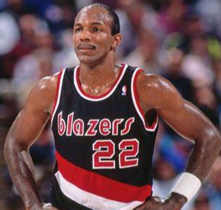

Trail Blazers

The Portland Trail Blazers (colloquially known as the Blazers) are an American professional basketball team based in Portland, Oregon. The Trail Blazers compete in the National Basketball Association (NBA) as a member of the league's Western Conference Northwest Division. The team played its home games in the Memorial Coliseum before moving to Moda Center in 1995 (called the Rose Garden until 2013). The franchise entered the league as an expansion team in 1970, and has enjoyed a strong following: from 1977 through 1995, the team sold out 814 consecutive home games, the longest such streak in American major professional sports at the time, and only since surpassed by the Boston Red Sox. The Trail Blazers are the only NBA team based in the bi-national Pacific Northwest, after the Vancouver Grizzlies relocated to Memphis and became the Memphis Grizzlies in 2001 and the Seattle SuperSonics relocated to Oklahoma City and became the Oklahoma City Thunder in 2008. The team has advanced to the NBA Finals three times, winning the NBA championship once in 1977. Their other NBA Finals appearances were in 1990 and 1992. The team has qualified for the playoffs in 34 seasons of their 48-season existence, including a streak of 21 straight appearances from 1983 through 2003, tied for the second longest streak in NBA history. The Trail Blazers' 34 playoff appearances rank third in the NBA only behind the Los Angeles Lakers and San Antonio Spurs since the team's inception in 1970 Six Hall of Fame players have played for the Trail Blazers (Lenny Wilkens, Bill Walton, Clyde Drexler, Dražen Petrović, Arvydas Sabonis, and Scottie Pippen). Bill Walton is the franchise's most decorated player; he was the NBA Finals Most Valuable Player in 1977, and the regular season MVP the following year. Four Blazers' rookies (Geoff Petrie, Sidney Wicks, Brandon Roy and Damian Lillard) have won the NBA Rookie of the Year award. Three players have earned the Most Improved Player award: Kevin Duckworth (1988), Zach Randolph (2004), and CJ McCollum (2016). Two Hall of Fame coaches, Lenny Wilkens and Jack Ramsay, have patrolled the sidelines for the Blazers, and two others, Mike Schuler and Mike Dunleavy, have won the NBA Coach of the Year Award with the team.
Clyde Austin Drexler (born June 22, 1962) is an American former professional basketball player who is the commissioner of the Big3 3-on-3 basketball league. Nicknamed "Clyde the Glide", he played 15 seasons in the National Basketball Association (NBA), spending a majority of his career with the Portland Trail Blazers before finishing with the Houston Rockets. He was a ten-time NBA All-Star and named one of the 50 Greatest Players in NBA History. Drexler won an NBA championship with Houston in 1995, and earned a gold medal on the 1992 United States Olympic team known as "The Dream Team". He was inducted twice into the Naismith Memorial Basketball Hall of Fame, in 2004 for his individual career and in 2010 as a member of the "Dream Team". He currently serves as a color commentator for Houston Rockets home games.
Damian Lamonte Ollie Lillard Sr. (born July 15, 1990) is an American professional basketball player for the Portland Trail Blazers of the National Basketball Association (NBA). He played college basketball for the Weber State Wildcats and earned third-team All-American honors in 2012. After being selected by Portland with the sixth overall pick in the 2012 NBA draft, Lillard was unanimously voted the NBA Rookie of the Year. He has received five NBA All-Star selections and is one of two players in Trail Blazers franchise history, along with Clyde Drexler, to become a five-time All-Star.